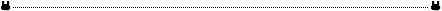

各种模型中的损失函数汇总
首先是对抗性损失。在训练判别器时，希望将真的判别为真的，将假的判别为假的，所以为两项之和。此外，根据优化目标，所有判别器的损失都应该在\(D(real)=1,~D(fake)=0\)时取最小值。在原始\(GAN\)论文中，对抗性损失的表达式为\(BCELoss\)：
real_loss = BCELoss(D(real), real_mask) # 将真的判别为真的
fake_loss = BCELoss(D(fake), fake_mask) # 将假的判别为假的
Loss_D = real_loss + fake_loss
而训练生成器时，只希望判别器将生成出的假数据判别为真的，所以只有一项。生成器的损失应该在\(D(fake)=1\)时取最小值。
Loss_G = BCELoss(D(fake), real_mask) # 将假的判别为真的，起到欺骗判别器的目的

在\(WGAN\)的论文中，提出了一种改进的对抗性损失，使用均值代替\(BCE\)，解决了原始\(GAN\)梯度爆炸和模式瓦解的问题：
Loss_D = - torch.mean(D(real)) + torch.mean(D(fake))
Loss_G = - torch.mean(D(fake))
# 注：WGAN生成器最后一层的激活函数是线性的，不需要sigmoid
可以看出，判别器的损失仍然是在\(D(real)=1,~D(fake)=0\)时取最小值，而生成器在\(D(fake)=1\)时取最小值。在判别器求导更新参数之后，\(WGAN\)还需要加一步，将判别器网络的参数范围全部放缩在一个超参数\(K\)之内：
for params in D.parameters():
params.data.clamp_(-K, K) # 超参数K需要视具体任务而调整，一般可以取0.01
\(WGAN-GP\)是\(WGAN\)的一个改进版本。上面\(WGAN\)的对抗性损失需要小心的调整超参数\(K\)的值，还是不够好。\(WGAN\)设置这个范围的目的其实是为了保证每次梯度更新的幅度都在一个范围内。
def compute_gradient_penalty(D, real_samples, fake_samples, device):
# 在真假样本之间构造插值点：插值样本=alpha*真样本+（1-alpha）*假样本
alpha = torch.rand(real_samples.size(0), 1, 1, 1).to(device)
interpolates = (alpha * real_samples + ((1 - alpha) * fake_samples))
interpolates.requires_grad_(True)
d_interpolates = D(interpolates)
fake = torch.ones_like(d_interpolates).to(device)
# 计算梯度
gradients = autograd.grad(
outputs=d_interpolates,
inputs=interpolates,
grad_outputs=fake,
create_graph=True,
retain_graph=True,
only_inputs=True,
)[0]
# 计算超出范围的梯度
gradients = gradients.view(gradients.size(0), -1)
gradient_penalty = ((gradients.norm(2, dim=1) - 1) ** 2).mean()
return gradient_penalty
gp = compute_gradient_penalty(D, real_samples, fake_samples, device) # 计算梯度惩罚
Loss_D = - torch.mean(D(real)) + torch.mean(D(fake)) + lambda * gp # 将梯度惩罚融入优化目标中
Loss_G = - torch.mean(D(fake)) # 生成器损失函数不变
总结一下，对抗性损失是训练任何一种\(GAN\)都不可缺的部分，实际中一般选择\(WGAN-GP\)或原始的\(BCELoss\)。在\(unconditionalGAN\)中，常见使用\(WGAN-GP\)，如\(StyleGANv1,v2\)；但是我在\(conditionalGAN\)中，一般见到的是原始的\(BCE\)，或者\(MSE\)形式的对抗性损失，可能没有显著差别吧。
循环一致性损失是由\(CycleGAN\)提出的，后来成为\(unpaired\)数据集图像翻译的标配。\(unpaired\)加入这种损失是必然的，因为循环一致性损失可以让你的图像翻译模型保证语义不变。循环一致性损失在训练生成器时使用，一般选择使用\(L1Loss\)。
fake_B = G_AB(real_A) # 生成假的A,B
fake_A = G_BA(real_B)
recov_A = G_BA(fake_B) # 通过生成器再将假图片变回去
recov_B = G_AB(fake_A)
loss_cycle_A = L1Loss(recov_A, real_A) # 希望变回去的图片和原图片一样，这样就保留了语义特征
loss_cycle_B = L1Loss(recov_B, real_B)
loss_cycle = (loss_cycle_A + loss_cycle_B) / 2 # 最终的循环一致性损失
这也是图像翻译模型中可以考虑的一种损失。域\(A\)的图片送到\(G_BA\)之中，希望得到的还是\(A\)自己。一般选择用\(L1Loss\)，因为\(L2Loss\)施加在图片上可能会导致图片模糊。
loss_identity_A = L1Loss(G_BA(real_A), real_A)
loss_identity_B = L1Loss(G_AB(real_B), real_B)
loss_identity = (loss_identity_A + loss_identity_B) / 2